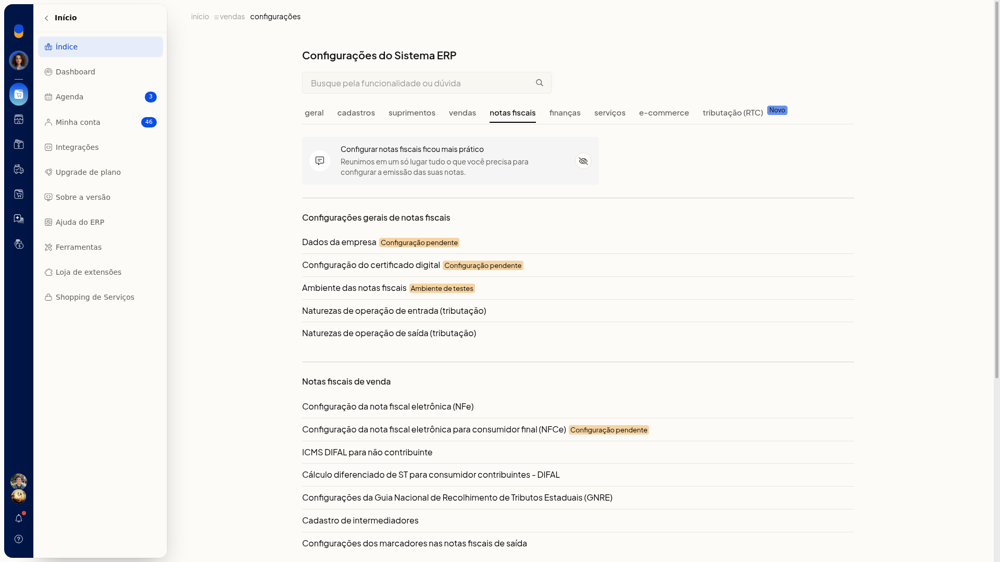

Transformar uma natureza de saída em operação de entrada
Instruções
-
Acesse Configurações > Configurações ERP.
-
Abra a aba Notas Fiscais.

-
Clique em Naturezas de operação de saída (tributação).
-
No menu de ações da linha, clique em Tornar operação de entrada.